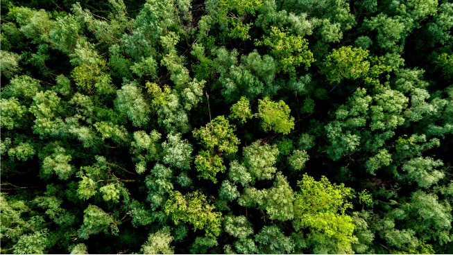
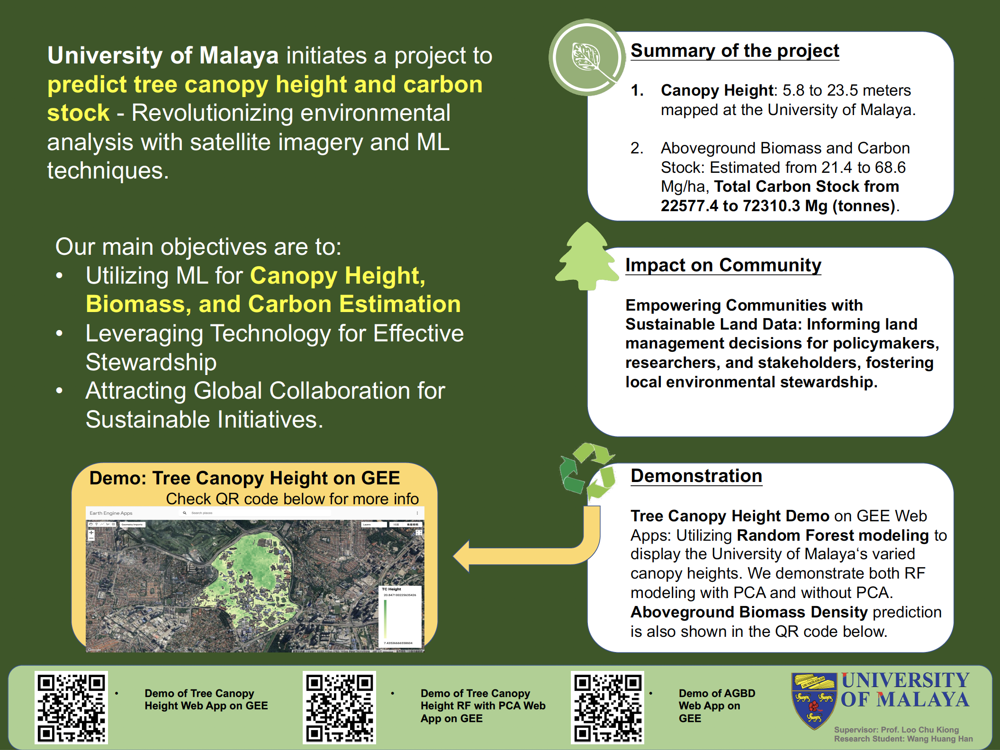
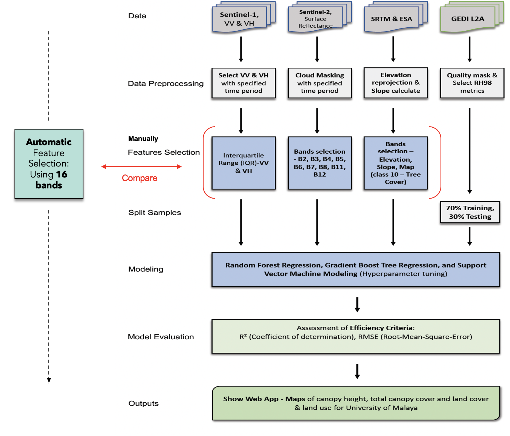
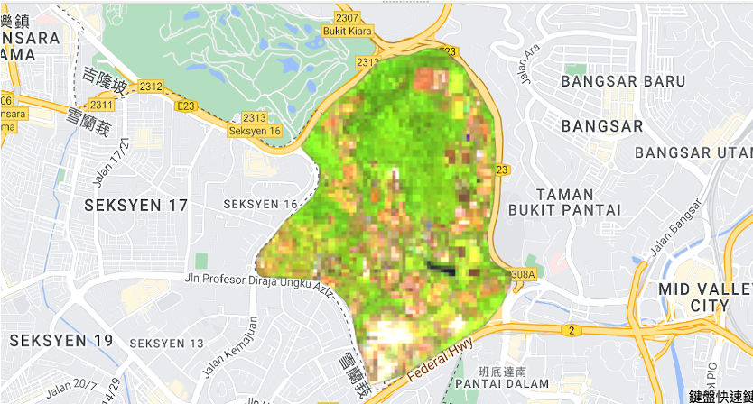

Canopy Height and Carbon Stock Prediction Using Satellite Images with Machine Learning on GEE

This research motivation comes from an awe of the beauty of nature. To dive into how unique nature is and my research motivation, click here Fascinating Malaysia Biodiversity - Research Motivation.
Description
This project uses satellite imagery on Google Earth Engine (GEE) to predict canopy height and estimate carbon content in the University of Malaya (Kuala Lumpur, Malaysia) area.
Overview
To give a brief overview of this research’s scope, I’ve created an infographic to showcase this project’s objectives, impacts, results, and demos.

Setup and Installation
- Prerequisites: Obtain access to Google Earth Engine Code Editor and have a GEE account. If not, please register here.
- Installation: No installation required; access GEE platform and import necessary scripts.
Usage
- Example snippets to execute canopy height prediction and carbon estimation using GEE’s JavaScript.
- Instructions on how to run the scripts within the GEE platform.
Data Sources
Sentinel-1 (C-band synthetic aperture radar SAR):
Sentinel-1 is a space mission by the European Union (EU) and carried out by ESA under the Copernicus Program.
- VV and VH bands capture signals reflected from the Earth’s surface, including vegetation and terrain.
- Use VV and VH as predictor variables. These bands offer radar backscatter values that can be related to vegetation structure, including canopy height, as validation with GEDI Data.
-
Sentinel-2 is a European multi-spectral imaging mission with high resolution.
- Included 12 spectral bands with resolutions of 10m, 20m, and 60m.
- Primary objective: monitoring variability in land surface conditions.
- Select bands ‘B2’, ‘B3’, ‘B4’, ‘B5’, ‘B6’, ‘B7’, ‘B8’, ‘B11’, ‘B12’ as predictor variables. → Manual feature selection
- Take all the 12 bands from ‘B1’ to ‘B12’ as independent variables. → Automatic feature selection
NASA SRTM Digital Elevation 30m:
SRTM data is used to construct a global digital elevation model.
- SRTM was conducted aboard the space shuttle Endeavour from February 11-22, 2000.
- Extract “Slope” and “Elevation” as predictor variables.
European Space Agency (ESA) WorldCover 10m:
The ESA dataset was launched since there is a massive need for accurate, timely, and high-resolution information on land cover, land use, and earth surface change.
- Use value 10 (Tree Cover only) as a predictor variable.
GEDI L2A Raster Canopy Top Height:
GEDI Light Detection and Ranging (Lidar) is an active remote sensing technology that uses a laser pulse to measure distance.
- Primarily used for measuring tree height, aboveground biomass, as well as leaf area index.
- Using ‘rh98’ (relative height metrics at 98%) to be the sampling point.
GEDI L4B Gridded Aboveground Biomass Density:
This dataset encompasses gridded information on aboveground biomass density derived from GEDI observations. These data provide insights into vegetation growth and distribution, offering valuable information for understanding global vegetation health and the impacts of climate change.
- Using ‘MU’ (mean aboveground biomass density, which estimated mean AGBD for the 1 km grid cell, including forest and non-forest.) to be the sampling point.
Project Model Structure

This model represents an example of a canopy height prediction workflow. For the AGBD prediction modeling and PCA (Principal Component Analysis), I’ve organized them into separate folders on my GitHub for easy reference.

The research project focuses on the University of Malaya as its study area, leveraging the Sentinel-2 dataset spanning from April 1st, 2021, to June 30th, 2021. Situated at the border of Kuala Lumpur and Petaling Jaya (Selangor), the university campus is nestled within a forested landscape. Notably, within this campus lies Rimba Ilmu (The Forest of Knowledge), a reserved forest established in 1974, covering approximately 80 hectares and hosting remarkable collections. Rimba Ilmu serves a pivotal role, utilizing its extensive resources to educate the public and students about tropical plant life, ecology, and conservation, thus fostering awareness about these critical aspects.
Minimal Reproducible Example (JavaScript Code)
Important Note: This example code illustrates the process of conducting canopy height regression modeling utilizing the Random Forest model along with manual feature selection.
Section 1: Boundary Selection
// Choose boundary on GEE
var boundary = ee.Geometry.Polygon(/* Coordinates */);
// Create a polygon feature
var polygon = ee.Feature(ee.Geometry.Polygon(boundary.coordinates()));
// Create a feature collection from the polygon
var boundary_feature = ee.FeatureCollection([polygon]);
// Print the feature collection
print('Boundary:', boundary_feature);Section 2: Importing Datasets (Sentinel-1, Sentinel-2, SRTM, ESA, GEDI L2A)
// Load Sentinel-1 for the non-rainy season.
var S1_PRS = ee.ImageCollection('COPERNICUS/S1_GRD')
.filterDate('2021-04-01', '2021-06-30')
.filter(ee.Filter.listContains('transmitterReceiverPolarisation', 'VV'))
.filter(ee.Filter.listContains('transmitterReceiverPolarisation', 'VH'))
.filter(ee.Filter.eq('instrumentMode', 'IW'))
.filter(ee.Filter.eq('orbitProperties_pass', 'ASCENDING'))
.filter(ee.Filter.bounds(boundary));
// Load Sentinel-2 spectral reflectance data.
var s2 = ee.ImageCollection('COPERNICUS/S2_SR');
// Load SRTM
var SRTM = ee.Image("USGS/SRTMGL1_003");
// Clip Elevation
var elevation = SRTM.clip(boundary);
// Load ESA World cover data
var dataset = ee.ImageCollection("ESA/WorldCover/v100").first();
// Clip the land cover to the boundary
var ESA_LC_2020 = dataset.clip(boundary);
// Extract forest areas from the land cover value = 10
var forest_mask = ESA_LC_2020.updateMask(
ESA_LC_2020.eq(10) // Only keep pixels where class equals 2
);
// Clip land cover to the boundary and visualize forests
// Display forests only from ESA imagery.
var visualization = {bands: ['Map'],};
Map.addLayer(forest_mask, visualization, "Trees");
// Import the "GEDI02_A_002_MONTHLY" dataset
var dataset = ee.ImageCollection('LARSE/GEDI/GEDI02_A_002_MONTHLY')
.map(qualityMask)
.select('rh98').filterBounds(boundary);
// Create a palette to visaulize the dataset
var gediVis = {
min: 1,
max: 60,
palette: 'darkred, red, orange, green, darkgreen',
};
// Set the map center and visualize the dataset
Map.setCenter(101.6556468417507, 3.127386383953448, 13);
Map.addLayer(dataset, gediVis, 'rh98');Section 3: Preparing Data
// Prepare inter-quartile range (IQR)
var S1_PRS_pc = S1_PRS.reduce(ee.Reducer.percentile([25,50,75]));
// Convert to natural units (linear units, which can be averaged)
var S1_PRS_pc = ee.Image(10).pow(S1_PRS_pc.divide(10));
var S1_PRS_pc_Feats = S1_PRS_pc.select(['VH_p50', 'VV_p50']).clip(boundary);
// Reproject to MY zone
var S1_PRS_pc_Feats = S1_PRS_pc_Feats.reproject({crs: 'EPSG:32647', scale:30});
// Check projection information
print('Projection, crs, and crs_transform:', S1_PRS_pc_Feats.projection());
// Also, Sentinel-2 and SRTM images have to be reprojected.
//Reproject to MY zone
var S2_composite = composite.median().reproject({crs: 'EPSG:32647', scale:30});
// Check projection information
print('S2_Projection, crs, and crs_transform:', S2_composite.projection());
// Reproject 'elevation' to MY zone
var elevation = elevation.reproject({crs: 'EPSG:32647', scale:30});
// Check projection information
print('elevation_Projection, crs, and crs_transform:', elevation.projection());
// Derive slope from SRTM
var slope = ee.Terrain.slope(SRTM).clip(boundary);
// Reproject 'slope' to MY zone
var slope = slope.reproject({crs: 'EPSG:32647', scale:30});
// Check projection information
print('slope_Projection, crs, and crs_transform:', slope.projection());Section 4: Data Processing and Visualization
// Calculate IQR for the VV and VH polarizations
// Calculate IQR for the VV polarization
var PRS_VV_iqr = S1_PRS_pc_Feats
.addBands((S1_PRS_pc.select('VV_p75')
.subtract(S1_PRS_pc.select('VV_p25')))
.rename('VV_iqr'));
// Calculate IQR for the VH polarization
var PRS_VH_iqr = S1_PRS_pc_Feats
.addBands((S1_PRS_pc.select('VH_p75')
.subtract(S1_PRS_pc.select('VH_p25')))
.rename('VH_iqr'));
// Print the image to the console
print('Post-rainy Season VV IQR', PRS_VV_iqr);
// Print the image to the console
print('Post-rainy Season VH IQR', PRS_VH_iqr);
// Display S1 IQR imagery
Map.addLayer(PRS_VV_iqr.clip(boundary), {'bands': 'VV_iqr', min: 0, max: 0.1}, 'Sentinel1 IW VV');
Map.addLayer(PRS_VH_iqr.clip(boundary), {'bands': 'VH_iqr', min: 0, max: 0.1}, 'Sentinel1 IW VH');
// Create masks, filter clouds from Sentinel-2, and prepare composite imagery
// Create a function to mask clouds using the Sentinel-2 QA band.
function maskS2clouds(image) {
var qa = image.select('QA60');
//Bits 10 and 11 are clouds and cirrus, respectively.
var cloudBitMask = ee.Number(2).pow(10).int();
var cirrusBitMask = ee.Number(2).pow(11).int();
//Both flags should be set to zero, indicating clear conditions.
var mask = qa.bitwiseAnd(cloudBitMask).eq(0).and(
qa.bitwiseAnd(cirrusBitMask).eq(0));
//Return the masked and scaled data.
return image.updateMask(mask).divide(10000);
}
// Filter clouds from Sentinel-2 for a given period.
var composite = s2.filterDate('2021-04-01', '2021-06-30')
// Pre-filter to get less cloudy granules.
.filter(ee.Filter.lt('CLOUDY_PIXEL_PERCENTAGE', 20))
.map(maskS2clouds)
.select('B2', 'B3', 'B4', 'B5', 'B6', 'B7', 'B8', 'B11', 'B12');
// Display a composite S2 imagery
Map.addLayer(S2_composite.clip(boundary), {bands: ['B11', 'B8', 'B3'], min: 0, max: 0.3}, 'S2_composite');Section 5: Data Fusion and Model Training
// Merge predictor variables
var mergedCollection = S2_composite
.addBands(PRS_VV_iqr)
.addBands(PRS_VH_iqr)
.addBands(elevation)
.addBands(slope)
.addBands(forest_mask);
// Clip to the output image to Uni Malaya study area boundary.
var clippedmergedCollection = mergedCollection.clipToCollection(boundary_feature);
print('clippedmergedCollection: ', clippedmergedCollection);
// Bands to include in the classification
var bands = ['B2', 'B3', 'B4', 'B5', 'B6', 'B7', 'B8', 'B11', 'B12', 'VV_iqr', 'VH_iqr', 'elevation', 'slope', 'Map'];
// Prepare training dataset from GEDI
// GEDI's Level 2A Geolocated Elevation and Height Metrics Product (GEDI02_A) is primarily composed of
// 100 Relative Height (RH) metrics, which collectively describe the waveform collected by GEDI.
// The original GEDI02_A product is a table of point with a spatial resolution (average footprint) of 25 meters.
// Sample 10,000 points from the dataset (Depending on the area in which GEDI received the points more or less)
var points = mosaic.sample({
region: boundary,
scale: scale,
numPixels: 10000,
projection: projection,
seed:66,
geometries: true});
// Check the number of the training points
print('Size: ', points.size());
print(points.limit(10));
// Display the training points
Map.addLayer(points, {}, 'Sampling points');
// Add a random column (named random) and specify seed value for repeatability.
var datawithColumn = points.randomColumn('random', 27);
// Seperate 70% for training, 30% for validation
var split = 0.7;
var trainingData = datawithColumn.filter(ee.Filter.lt('random', split));
// Print the training data
print('training data', trainingData);
var validationData = datawithColumn.filter(ee.Filter.gte('random', split));
// Print the testing (validation) data
print('validation data', validationData);
// Train a random forest regression model
// Collect training data
var training = clippedmergedCollection.select(bands).sampleRegions({
collection: trainingData,
properties: ['rh98'],
scale: 30 // Need to change the scale of training data to avoid the 'out of memory' problem
});
// Train a random forest classifier for regression
var classifier = ee.Classifier.smileRandomForest({numberOfTrees:50, seed:3}) // 50 trees
.setOutputMode('REGRESSION')
.train({
features: training,
classProperty: 'rh98',
inputProperties: bands
});
// Run the classification and clip it to the boundary
var regression = clippedmergedCollection.select(bands)
.classify(classifier, 'predicted')
.clip(boundary);
print("regression: ", regression);Section 6: Model Evaluation and Export
// Visualize regression output and define a palette
var palette = ['#f7fcb9','#addd8e','#31a354'];
// Display the regression output.
// Get dictionaries of min & max predicted value
var regressionMin = (regression.reduceRegion({
reducer: ee.Reducer.min(),
scale: 30,
crs: 'EPSG:32647',
geometry: boundary,
bestEffort: true,
tileScale: 5
}));
var regressionMax = (regression.reduceRegion({
reducer: ee.Reducer.max(),
scale: 30,
crs: 'EPSG:32647',
geometry: boundary,
bestEffort: true,
tileScale: 5
}));
var regressionAvg = (regression.reduceRegion({
reducer: ee.Reducer.mean(),
scale: 30,
crs: 'EPSG:32647',
geometry: boundary,
bestEffort: true,
tileScale: 5
}));
// Add to map
var viz = {palette: palette, min:regressionMin.getNumber('predicted').getInfo(), max:regressionMax.getNumber('predicted').getInfo()};
Map.addLayer(regression, viz, 'Regression');
// Check model performance
print("Regression Min & Max: ", regressionMin.getNumber('predicted').getInfo(), regressionMax.getNumber('predicted').getInfo());
print("Regression Average: ", regressionAvg.getNumber('predicted').getInfo());
// Create model assessment statistics
// Get predicted regression points in same location as training data
var predictedTraining = regression.sampleRegions({collection: trainingData, geometries: true});
// Seperate the observed (rh98_GEDI) & predicted (regression) properties
var sampleTraining = predictedTraining.select(['rh98', 'predicted']);
// Compute Root Mean Squared Error (RMSE)
// Get array of observation and prediction values
var observationTraining = ee.Array(sampleTraining.aggregate_array('rh98'));
var predictionTraining = ee.Array(sampleTraining.aggregate_array('predicted'));
// Compute residuals
var residualsTraining = observationTraining.subtract(predictionTraining);
// Compute RMSE (Training) with equation and print the result
var rmseTraining = residualsTraining.pow(2).reduce('mean', [0]).sqrt();
print('Training RMSE', rmseTraining);
//Perform validation
// Get predicted regression points in same location as validation data
var predictedValidation = regression.sampleRegions({collection: validationData, geometries: true});
// Seperate the observed (rh98_GEDI) & predicted (regression) properties
var sampleValidation = predictedValidation.select(['rh98', 'predicted']);
// Compute RMSE (Validation)
// Get array of observation and prediction values
var observationValidation = ee.Array(sampleValidation.aggregate_array('rh98'));
var predictionValidation = ee.Array(sampleValidation.aggregate_array('predicted'));
// Compute residuals
var residualsValidation = observationValidation.subtract(predictionValidation);
// Compute RMSE with equation and print the result
var rmseValidation = residualsValidation.pow(2).reduce('mean', [0]).sqrt();
print('Validation RMSE', rmseValidation);
// Export the regression output
Export.image.toDrive({
image:regression,
description: 'UM_TCH_GEDI_2021', //Please change your description here.
scale: 20,
crs: 'EPSG:32647',
maxPixels: 6756353855,
region: boundary
});Results
Canopy Height Prediction Results
Table 1 showcases the outcomes of various machine learning models in predicting canopy height based on the satellite imagery and geographical data utilized in this project:
| No | Machine Learning Model | Min. Canopy Height (m) | Avg. Canopy Height (m) | Max. Canopy Height (m) |
|---|---|---|---|---|
| 1 | Random Forest (RF) | 7.435 | 13.69 | 20.847 |
| 2 | RF with PCA | 5.81 | 11.714 | 23.469 |
| 3 | Gradient Boost Tree Regression | 1.466 | 9.182 | 22.049 |
| 4 | GBTR with PCA | 4.457 | 10.437 | 20.889 |
| 5 | Support Vector Machine (SVM) | 11.087 | 12.368 | 14.058 |
| 6 | SVM with PCA | 7.809 | 9.318 | 12.036 |
These results demonstrate the variation in minimum, average, and maximum canopy heights predicted by different machine learning models, highlighting each model’s potential to effectively estimate canopy height.
Model Assessment Metrics
Table 2 represents the assessment metrics of the machine learning models used for canopy height prediction:
| No | Machine Learning Model | R² Training (70%) | R² Testing (30%) | RMSE (m) Training | RMSE (m) Testing |
|---|---|---|---|---|---|
| 1 | Random Forest (RF) | 0.655 | 0.355 | 7.954 | 5.523 |
| 2 | RF with PCA | 0.731 | 0.721 | 6.814 | 4.05 |
| 3 | Gradient Boost Tree Regression | 0.389 | 0.377 | 8.654 | 6.686 |
| 4 | GBTR with PCA | 0.577 | 0.685 | 7.716 | 4.196 |
| 5 | Support Vector Machine (SVM) | 0.604 | 0.193 | 9.905 | 7.764 |
| 6 | SVM with PCA | 0.169 | 0.48 | 11.085 | 8.511 |
These metrics gauge the performance of each model in predicting canopy height, providing insights into their training and testing R² values along with the Root Mean Squared Error (RMSE). A higher R² value closer to 1 and lower RMSE values indicate better predictive accuracy.
Describe these tables to highlight the significance of each model’s performance metrics in predicting canopy height and assessing the model’s accuracy using R² and RMSE values.
Carbon Stock Estimation
Aboveground Biomass Density (ABGD) Calculation Results
Using the GEDI L4B dataset and employing the Random Forest modeling method, the aboveground biomass prediction results in the University of Malaya are as follows:
Table 3 Aboveground Biomass Prediction Results
| No | Machine Learning Model | Min. AGBD (Mg/ha) | Avg. AGBD (Mg/ha) | Max. AGBD (Mg/ha) |
|---|---|---|---|---|
| 1 | Random Forest (RF) | 21.406 | 41.252 | 68.559 |
Table 4 Model Assessment Metrics
| No | Machine Learning Model | R² Training (70%) | R² Testing (30%) | RMSE (Mg/ha) Training | RMSE (Mg/ha) Testing |
|---|---|---|---|---|---|
| 1 | Random Forest (RF) | 0.73 | 0.209 | 29.637 | 27.751 |
These metrics showcase the effectiveness of the Random Forest model in predicting aboveground biomass density, indicating its potential to estimate biomass with considerable accuracy.
Tree Area Calculation
The total tree land area within the University of Malaya study area has been calculated:
// Tree Land area (hectare, ha) in the Study area (University of Malaya)
// Calculate the tree area in hectares
var treeArea = forest_mask.select('Map');
var areaImage = treeArea.multiply(ee.Image.pixelArea());
// Now that each pixel for the forest class in the image has the value
// equal to its area, we can sum up all the values in the region
// to get the total forested area.
var area = areaImage.reduceRegion({
reducer: ee.Reducer.sum(),
geometry: boundary,
scale: 30, // Specify the scale that matches your projection
maxPixels: 1e9 // Adjust as needed
});
// Convert the forested area to hectares
var treeAreaHectares = ee.Number(area.get('Map')).divide(10000); // 1 square meter = 0.0001 hectares
// Print the tree area in hectares
print('Tree Area (Hectares) in the University of Malaya:', treeAreaHectares);Tree Area (Hectares) in the University of Malaya: 2109.434 hectares
Carbon Storage Calculation
The carbon storage estimation process involves the computation of aboveground carbon storage based on the calculated aboveground biomass density and the specified tree area in the University of Malaya study area:
Aboveground Carbon Storage Calculation
// Aboveground Carbon Storage Calculation in Study Area (UM)
// Formula: Aboveground Carbon Storage (Mg, Megagram also known as tonnes) = Aboveground Biomass (Mg/ha) x Carbon Content Factor x Tree Area (ha)
// Define the inputs
var minAbovegroundBiomass = 21.406166582107545; // Min aboveground biomass (Mg/ha)
var maxAbovegroundBiomass = 68.5589729944865; // Max aboveground biomass (Mg/ha)
var avgAbovegroundBiomass = 41.252308736491585; // Avg aboveground biomass (Mg/ha)
var carbonContentFactor = 0.5; // Carbon content factor
var treeArea = 2109.4340347280445; // Tree area 2109.4340347280445 ha
// Calculate Aboveground Carbon Storage
var abovegroundCarbonStorageMin = minAbovegroundBiomass * carbonContentFactor * treeArea;
var abovegroundCarbonStorageMax = maxAbovegroundBiomass * carbonContentFactor * treeArea;
var abovegroundCarbonStorageAvg = avgAbovegroundBiomass * carbonContentFactor * treeArea;
// Print the results
print('Aboveground Carbon Storage (Mg, tonnes) in the University of Malaya:');
print('Minimum Estimate:', abovegroundCarbonStorageMin, 'Mg (tonnes)');
print('Maximum Estimate:', abovegroundCarbonStorageMax, 'Mg (tonnes)');
print('Average Estimate:', abovegroundCarbonStorageAvg, 'Mg (tonnes)');Aboveground Carbon Stock Estimation Results
Table 5 summarizes the estimates for aboveground carbon stock in the University of Malaya study area:
| No | Aboveground Carbon Stock Area | Min. Carbon (Mg) | Avg. Carbon (Mg) | Max. Carbon (Mg) |
|---|---|---|---|---|
| 1 | University of Malaya | 22577.448 | 43509.512 | 72310.316 |
These estimates indicate the potential carbon storage within the specified study area, providing valuable insights into its carbon sequestration capacity and highlighting its significance in environmental assessments and management strategies.
Web Application Showcase
Conclusion
This project leveraged satellite imagery and machine learning through Google Earth Engine to estimate canopy height and carbon content in the University of Malaya area. By analyzing diverse datasets like Sentinel-1, Sentinel-2, SRTM, ESA WorldCover, GEDI L2A, and GEDI L4B, we gained valuable insights.
Key Findings
Canopy Height Prediction: Various machine learning models were employed, showcasing the potential to estimate canopy height. Random Forest and RF with Principal Component Analysis emerged as promising models.
Aboveground Biomass Density: The Random Forest model proved valuable in estimating biomass density, providing insights into vegetation health and carbon sequestration potential.
Carbon Storage Assessment: The estimation of aboveground carbon stocks revealed significant reserves within the University of Malaya area, highlighting its role as a crucial carbon sink.
Significance
This study sheds light on the University of Malaya’s ecosystem, emphasizing its importance in carbon sequestration. Understanding its capacity for storing carbon reinforces the significance of preserving such areas for environmental stability and biodiversity conservation.
Future Directions
The methodologies employed and findings derived from this research offer implications for environmental assessments and conservation strategies. The accuracy of predictive models and detailed carbon stock estimations could serve as a foundational framework for similar studies globally, aiding ecosystem management and informed decision-making.
In summary, this project underscores the University of Malaya’s ecosystem’s vital role in carbon sequestration, emphasizing the significance of satellite imagery and machine learning in environmental assessments and conservation endeavors.